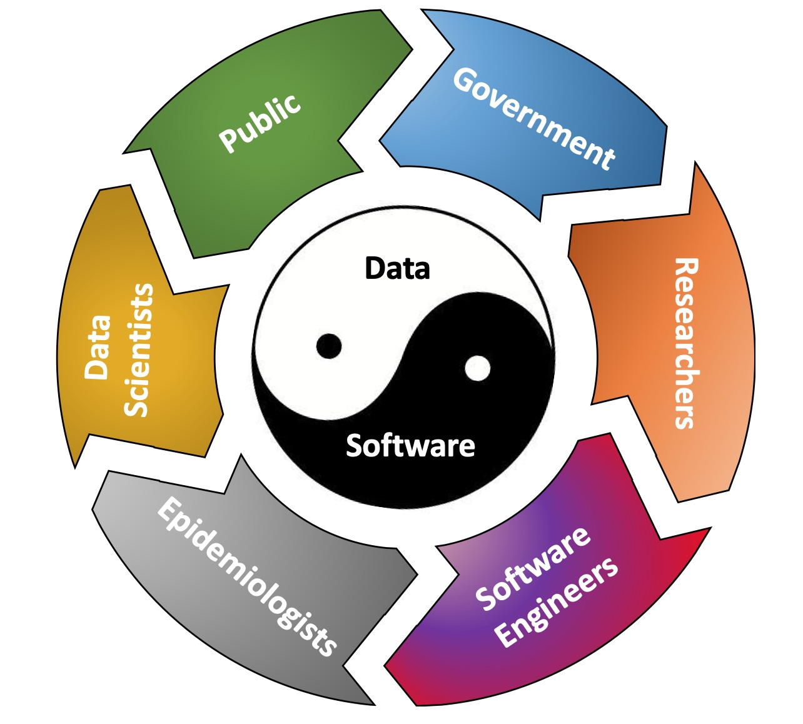
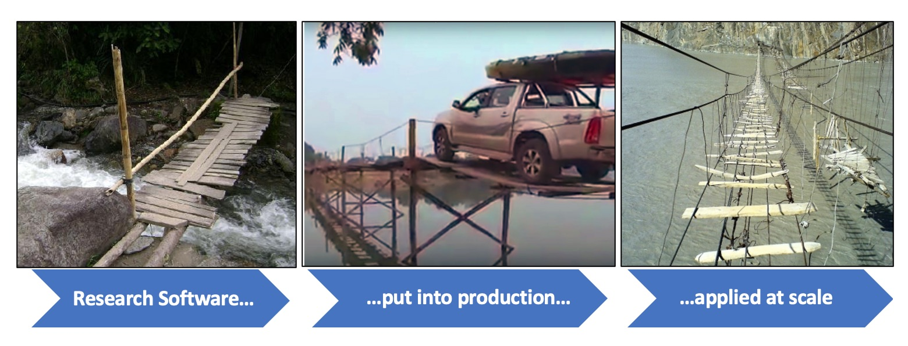

Fellowship of the Ring¶
To set the scene, I must first say that I believe that software engineering is a process that, at its heart, is designed to instill trust in software. Trust is at the centre of everything that we do. It is so central, and often-times implicit, that it is nearly always invisible and under-valued. We only notice the importance of trust when it has gone.
Trust is critical to support data-based, evidence-led decision making. Its success is based on an implicit ring of trust that binds all of us together;
{kind=link}
The ring of trust¶
The public must trust that the government is making sound decisions.
The government must trust that the researchers are making sound recommendations.
The researchers must trust that the software they are using is giving them sound predictions.
The software engineers must trust that the models produced by the epidemiologists are fully described and will be able to make good predictions.
The epidemiologists must trust that the data scientists have given them sound data with which to develop their models.
The data scientists must trust that the data from the public is accurate and up to date.
This trust runs in both directions!¶
The public must trust the epidemiologists to take proper care of their private health and social data.
The government must trust the public to supply correct data and to follow any rules and guidance.
The researchers must trust that the government will listen to and accept their recommendations.
The software engineers must trust that the researchers will use the software correctly and not over-interpret or misrepresent any results.
The epidemiologists must trust the software engineers to correctly translate their models and data into software.
The data scientists must trust the epidemiologists to understand the data and recognise its limitations and inaccuracies.
How trust can be broken¶
If any of these links weaken, then the ring of trust could break down. If this happens, then public trust will be lost. This would be disasterous, as the public would then neither follow the rules and guidance from government, nor supply their private data to the epidemiologists.
It is critically important that trust is maintained, and be seen to be maintained at each of these links. Software and data bind the ring of trust together, and so good data science and good software engineering is vital.
While a blog post on the data science needs would be a great read (e.g. how to clean data so it can be trusted, the need for anonymisation and security, robust methods of collecting data from the public etc.), it is not my domain of expertise. I must therefore trust that the data scientists are doing their work correctly and are writing blog posts accordingly.
I am a Research Software Engineer, and so my role is strengthening trust relating to the software. This is how I was pulled into the MetaWards project. In so doing, the last two weeks have taught me much about the vital role of research software engineering, and how RSEs can make a real difference.
Trust in software¶
MetaWards is a piece of software that is written by Leon Danon. It predicts the spread of a disease via a stochastic metapopulation model of the movements of people within and between electoral wards.
The program came from work conducted over 10 years ago, and was recently adapted to model CoVID-19 transmission in England and Wales, with results published (pre-print) here;
“A spatial model of CoVID-19 transmission in England and Wales: early spread and peak timing”, Leon Danon, Ellen Brooks-Pollock, Mick Bailey, Matt J Keeling, medRxiv 2020.02.12.20022566; DOI: 10.1101/2020.02.12.20022566
These results were part of a suite of modelling that led to the recommendation to enact a lock-down.
It is extremely important that predictions from this software, and others like it, can be trusted to be correct. The public have quite rightly asked that all software and data on which policy is based is made available for scrutiny. Any hints that a program is buggy or data is faulty will lead to a loss of public and government trust in the science. This means that the data sources, and this software and others like it, will come under immense pressure to not only be correct, but also to be seen to be correct.
Metawards (the Grey)¶
Leon published MetaWards on GitHub on January 28th this year. A first, naive look at this code would give the appearance that it is not well engineered.
The program is written in C, uses raw pointers everywhere, crashes if it doesn’t get the expected input, and is configured by directly editing the main function and recompiling. Input parameters and source code are all mixed together, and testing appears to be non-existant.
On this naive and incorrect first impression, MetaWards appears to be a program that is not worthy of a lot of trust.
This naive view is incorrect because MetaWards works. It correctly implements the model derived by Leon and his collaborators. Closer inspection of the code reveals lots of run-time testing. There are many if blocks that check during the model run that the values being computed make physical sense. The code layout is designed for speed and flexibility. There simply wasn’t the research need or time to build the nice-to-haves of a good user interface or visible testing infrastructure.
The only thing “wrong” with the MetaWards C code is that it is now being scaled up and put into production in a way that was never envisioned when it was written. This image from my bridges talk captures the problem well.
{kind=link}
Researchers are not trained software engineers. They are highly intelligent people who know how to use the tools around them to solve their research problems. They know how to write research software that works and produces good results today. They are just not focussed on or rewarded for writing software that will still work tomorrow. Research software solutions thus tend to be a little hacky, Heath Robinson and bespoke. Normally this wouldn’t matter too much as the software is invisible, and the research has moved on. However, anyone should be wary of applying these solutions in production or at scale, as the leap of faith needed to cross these bridges is very high.
MetaWards (the White)¶
To build trust, software must be engineered. It needs tests. It needs needs documentation. It needs to be modular. It needs to be reproducible. It needs to be version controlled. It needs to produce output complete with provenance. It needs to scale. It needs to be easy for others to download and to use, and to verify that it works. And all of these things must be publicly visible so that, on a quick first impression, the software looks like it works.
Transforming MetaWards from where it started to where it is now was a long process with many stages. This is why this is such a long multi-part blog post.
The first step to building trust was for me to gain trust in the MetaWards code, and for Leon to gain trust in me as a research software engineer.
I thus sat down with my laptop on Thursday morning with the aim of learning exactly what MetaWards did and how it worked. I needed to immerse myself in a Zen of Code, so that the entire codebase was in my head. I needed deep understanding of every line so that I could show Leon that I could communicate with him in the language of his model and his code.
Translation equals understanding¶
Normally on such projects I would learn an algorithm or codebase by translating key parts into another language. This is not to rewrite the code. Rather, it forces me to fully read each line, and through translation, I gain deep understanding.
In addition, I can instrument and add tests to this translation, which enable me to play with the code in a familiar environment, and which can then serve as stable reference points for tests and experiments as I move forwards.
MetaWards is a relatively small code (~3000 lines), and so I estimated that it wouldn’t take long to port all of it to Python. It took about 2.5 days (Thursday, Saturday afternoon and Sunday), at the end of which I had a Python code that could reproduce, number-for-number, everything that the original C code could do - albeit significantly more slowly!
Creating this port surfaced a number of bugs. These were caught either because Python has the concept of None, and so use-before-initialised errors were caught, or because the act of translation itself raised logical inconsistencies. For example, in one loop, the act of re-using a distance calculated for two very similar data structures was incorrect, as the actual ordering of the data in memory was different. No automatic tool or skim read of code would have detected that problem.
The Python port gave me the flexibility to quickly refactor to fix those bugs. I had pytest as a guard-rail, and could discover exactly how the bugfixes changed, or didn’t change, the results compared to the original C code. Fortunately, none of the bugs affected the central predictions of MetaWards, meaning that I now have high confidence that the code itself is correct. I was able to write a detailed report to Leon with all my findings, together with detailed discussion of the impacts of any code issues. This detailed feedback gave Leon the trust he needed to allow me to continue working on his software. This Python translation, together with my report, was good evidence that convinced Leon that I could join the ring of trust.
Who shall pass?¶
With the translation completed I now had two versions of MetaWards. Both appeared identical, reading the same inputs and writing the same outputs. One was fast and powerful today. But the other had the potential to be even faster and even more powerful tomorrow. On Sunday evening I thus had a decision;
work on fixing and developing the C code, which is fast, but would be challenging to maintain and develop as part of a group, and would accrue significant technical debt as it is developed which would eventually need to be paid off,
or work on speeding up the Python code, which is easier to develop and test, and which could be made into modular components that could be repurposed for larger and more complex programs in the future.
Whether via sound technical reasons, or post-decision rationalisation of a moment of over-confidence and cockiness, I decided to press ahead and speed up the Python code. I was emailing my report to Leon on the Monday morning, and had a meeting with him on the Friday, and so I had a little time to explore whether my Python could be as fast as C. I set myself a deadline of the end of the week to achieve performance parity with the C code. Suffice to say, by Friday morning I had enough evidence to get Leon to trust that I wasn’t wasting time, and by the evening. I had succeeded and the Python was faster than the C.